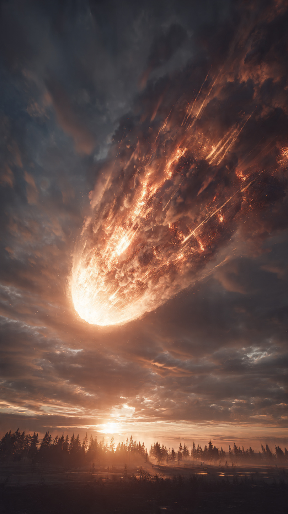
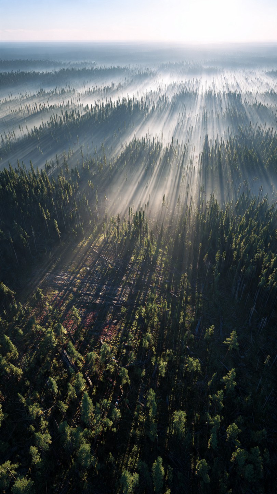

```html id="5t9wqa"
الانفجار الذي دمّر ملايين الأشجار دون أن يترك حفرة | قصص تاريخية
```
في صباح يوم الثلاثين من يونيو عام 1908، كان الهدوء يخيّم على غابات سيبيريا الشاسعة في روسيا.
لم تكن هناك مدن كبيرة في المنطقة.
ولا مصانع أو طرق مزدحمة.
فقط أشجار تمتد إلى ما لا نهاية.
وفجأة...
أضاءت السماء بضوء ساطع يشبه الشمس، أعقبه انفجار هائل هز الأرض.
وسمع الناس دويًا قويًا على بعد مئات الكيلومترات.
وكان ذلك بداية واحد من أعظم ألغاز الطبيعة في التاريخ.
وقع الانفجار بالقرب من نهر تونغوسكا، في منطقة نائية للغاية.
وقدرت الدراسات الحديثة أن طاقته كانت تعادل ما بين 10 و15 ميغاطن من مادة TNT، أي مئات المرات أقوى من القنبلة الذرية التي أُلقيت على هيروشيما.
لكن الغريب أن الانفجار لم يترك فوهة اصطدام كبيرة في الأرض، كما يحدث عادة عند سقوط النيازك.
ولهذا حيّر العلماء منذ اللحظة الأولى.
ولأن المنطقة كانت بعيدة وصعبة الوصول، لم يصل إليها الباحثون إلا بعد سنوات.
وعندما بدأوا دراسة المكان، وجدوا مشهدًا مذهلًا.
أكثر من ثمانين مليون شجرة كانت ممددة على الأرض في مساحة تزيد على ألفي كيلومتر مربع.
وكان اتجاه سقوط الأشجار يشير إلى أن قوة هائلة انفجرت في الهواء فوق الغابة، وليس على سطح الأرض.
ومنذ ذلك الحين، ظهرت عشرات التفسيرات.
فهل كان السبب نيزكًا؟
أم مذنبًا؟
أم ظاهرة طبيعية لم تُفهم بعد؟
لكن...
لماذا لم يعثر العلماء على حفرة أو بقايا كبيرة للجسم الذي تسبب في الانفجار؟
هذا ما سنعرفه في الجزء الثاني.
📷 الصورة رقم 1

عندما وصل العلماء إلى منطقة تونغوسكا في عشرينيات القرن العشرين، بدأوا في دراسة آثار الانفجار بدقة.
وكان أول ما لفت انتباههم أن الأشجار لم تكن محترقة بالكامل، بل كانت ممددة على الأرض في اتجاهات تشير إلى أن موجة صدم قوية انفجرت في السماء فوق الغابة.
أما الأشجار القريبة من مركز الانفجار، فقد بقي بعضها قائمًا، لكنها كانت مجردة من أغصانها، وهو نمط يتوافق مع انفجار هوائي شديد.
وبعد عقود من البحث، توصل كثير من العلماء إلى أن التفسير الأكثر قبولًا هو أن جسمًا سماويًا، ربما كان كويكبًا صغيرًا أو مذنبًا، دخل الغلاف الجوي بسرعة هائلة.
ومع ازدياد الضغط والحرارة، انفجر على ارتفاع عدة كيلومترات فوق سطح الأرض قبل أن يصل إليها.
ولهذا لم تتكوَّن حفرة اصطدام كبيرة، لأن الجسم لم يضرب الأرض مباشرة.
ورغم هذا التفسير، ظهرت فرضيات أخرى على مر السنين.
فقد تحدث بعض الأشخاص عن الثقوب السوداء الصغيرة أو الأجسام الفضائية الغامضة، بل وحتى عن مركبات فضائية.
لكن هذه الأفكار لم تجد أدلة علمية قوية تدعمها، بينما ظل تفسير الانفجار الهوائي الناتج عن جسم سماوي هو الأكثر توافقًا مع الدراسات والقياسات الحديثة.
وقد ساعدت دراسة حادثة تونغوسكا العلماء على فهم الأخطار التي قد تشكلها الأجسام القريبة من الأرض.
فلو وقع انفجار مشابه فوق مدينة كبيرة اليوم، لأمكن أن يتسبب في دمار واسع، حتى من دون أن يصطدم الجسم بسطح الأرض.
ولهذا تراقب وكالات الفضاء حاليًا آلاف الكويكبات القريبة من كوكبنا لرصد أي خطر محتمل.
لكن...
ما الذي تعلمه العلماء من حادثة تونغوسكا؟
ولماذا ما زالت تُعد واحدة من أهم الظواهر الطبيعية في العصر الحديث؟
هذا ما سنعرفه في الجزء الثالث والأخير.
📷 الصورة رقم 2

بعد أكثر من قرن على انفجار تونغوسكا، لا تزال هذه الحادثة تُعد أكبر انفجار ناتج عن جسم سماوي في التاريخ الحديث شهدته البشرية.
وقد ساعدت الدراسات التي أُجريت في المنطقة العلماء على فهم كيفية تصرف الكويكبات والمذنبات عند دخولها الغلاف الجوي بسرعات هائلة.
وأظهرت النماذج العلمية أن الجسم انفجر في الهواء قبل وصوله إلى الأرض، مطلقًا طاقة هائلة تسببت في تسوية ملايين الأشجار بالأرض دون تكوين حفرة اصطدام كبيرة.
وأصبحت حادثة تونغوسكا سببًا مهمًا في تطوير برامج مراقبة الأجسام القريبة من الأرض.
فاليوم، تستخدم وكالات الفضاء حول العالم التلسكوبات والرادارات لاكتشاف الكويكبات التي قد تقترب من كوكبنا.
كما تُجرى أبحاث وتجارب لاختبار وسائل يمكن استخدامها لتغيير مسار أي جسم فضائي قد يشكل خطرًا في المستقبل، إذا تم اكتشافه قبل وقت كافٍ.
ورغم أن انفجار تونغوسكا وقع في منطقة نائية، فإن العلماء يشيرون إلى أن وقوع حدث مشابه فوق مدينة كبيرة كان سيؤدي إلى دمار واسع.
ولهذا تُعد دراسة هذه الظاهرة جزءًا مهمًا من جهود حماية الأرض من الأخطار القادمة من الفضاء.
فالعلم لا يكتفي بفهم الماضي، بل يساعد أيضًا على الاستعداد لما قد يحدث في المستقبل.
إن قصة تونغوسكا تذكرنا بأن الكون مليء بالظواهر المدهشة، وأن كوكب الأرض جزء من نظام كوني واسع قد يتعرض أحيانًا لأحداث غير متوقعة.
ولهذا بقي انفجار تونغوسكا واحدًا من أكثر الأحداث الطبيعية إثارة في التاريخ الحديث، ودليلًا على أهمية البحث العلمي في كشف أسرار الكون والاستعداد لتحدياته.
☄️🌲 انتهت القصة 🌲☄️